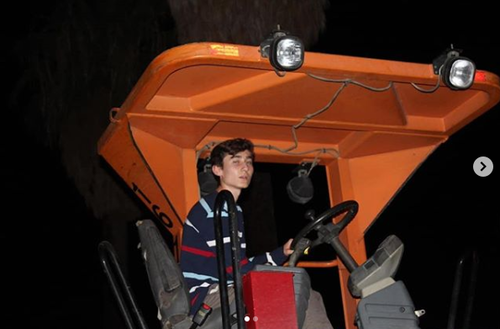
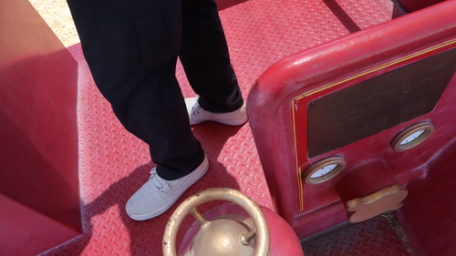
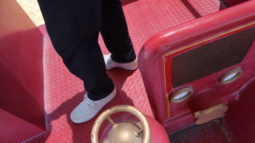
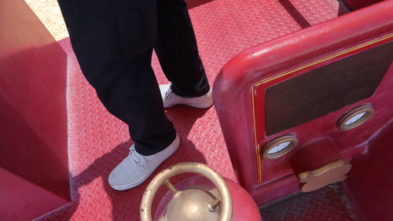

Antonio Macias-Gonzalez
My name is Antonio Macias-Gonzalez. I am a fourth year Psychology student who is soon to graduate this coming June from the University of California, Riverside. While COVID-19 has placed us in unpredictable circumstances and with online school and lockdowns, it was difficult to get involved. Nonetheless we did everything we could while working and accomplishing school both full-time. While I am about to get my degree, I have many other traits and experience that would help in my field. Maneuvering through the pandemic and finding time management strategies that accommodate this new era is experience within itself. A variety of issues have presented themselves for mental health and with a high rise of awareness to get help, I want to be a person that people can comfortably come to with their problems.
During the pandemic I worked at Aerotek Inc. where I assembled ventilators in an assembly line that would be sent to the hospitals to assist those with respiratory problems. While I needed to work to pay for my expenses, it was great knowing that my job directly contributed to helping the pandemic and that the configurations I made on the ventilators had to be fully functional or else somebody with urgent need would have a malfunctioning unit. This job helped me think about other people and connect myself to my work and understand the bigger thing that I am contributing to. I realized the impact that a job as small as mine can have. The job site was also highly collaborative with there always being a need to communicate with co-workers and learn new positions. Teamwork created efficiency in the workplace and I learned how to navigate myself through the work and where I fit in best to help the company the most I can.
The pandemic opened up new areas of need that allowed for different types of employment to flourish. For example, I worked in the delivery driver business for companies like DoorDash and Instacart. These jobs were in higher demand at the time due to the outbreak of COVID-19 and the lockdowns. Many people were afraid to go out and did not want to risk the health of their loved ones to go buy groceries. I decided to do the job regardless of the COVID exposure as I just made sure to follow all precautions for the safety of myself and others. Knowing that my job was directly helping people and making sure that sick, disabled, and elderly people were able to get their items in a timely manner helped me grow my emotional intelligence and have a lot of patience and compassion. While I understood times were hard and this job required a lot, I always liked looking at the bright side of things and took notice more of how much of a help delivery drivers are during this time period. I started loving seeing how grateful some people would be once they received their items and me helping them take it inside and just talk to them about their day.
Experience
Configurator
• Configured respiratory ventilators
• Tested functions of each ventilator to make sure they are functional before shipment
• Signed off on procedures and made sure all paperwork was correct
Delivery Driver
• Responsible for picking up orders
• Responsible to maintain patience and compassion with customer under stressful environments
Warehouse Worker
• Scanned items to and from their locations to make sure things are tracked
• Transferred packages into trailers for them to be shipped
• Organized packages onto carts for better organization
• Made sure things ran well and nothing was off
Education
UC Riverside
Rancho Mirage High School
University of California Riverside
Portfolio


 

